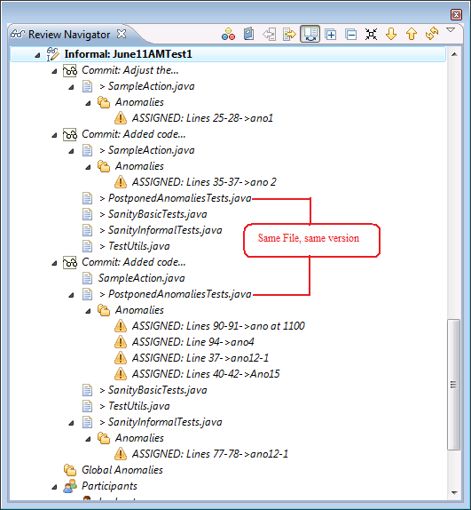
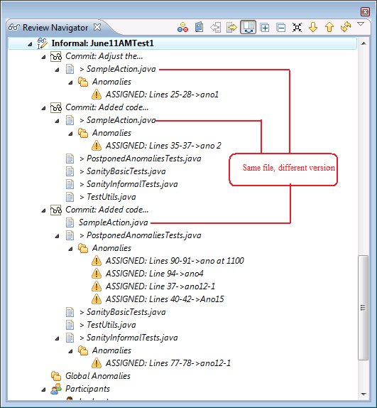

| Advanced Topics | ||
|---|---|---|
|
|
||
| Tasks | ||
When creating a review, it is possible to add multiple commits. The commit might refer to different patch set or commit versions depending of the version control being used. If someone modified some files and generated a second review Item / commit,(generating a patch set based on the initial commit) some files are modified but not necessary all files.
When a reviewer creates a new anomaly on files not impacted yet in the second commit, we are referring to the same file version, whether the reviewer is using the file in the first or second commit, the anomaly is only associated to the last review item / commit in the last commit. See image below:

If you raised an anomaly on a file having different version in each commit, then the anomaly will show on the one having the file version it is referring to. See image below:

|
|

|
|
| Tasks |